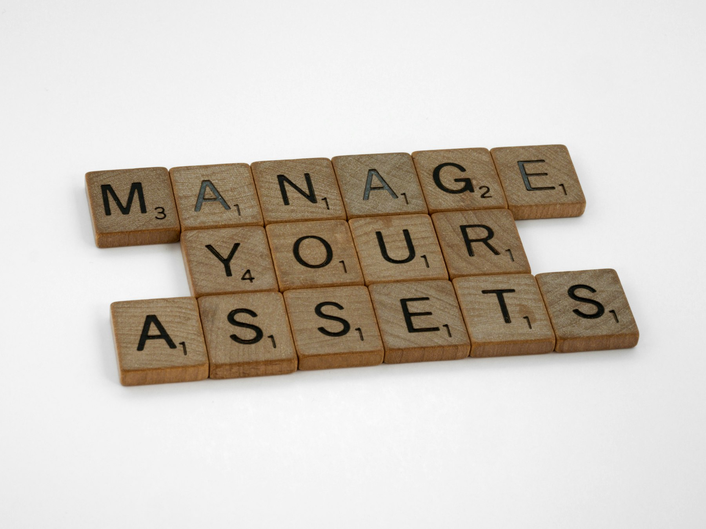

TL;DR
Beginner investors should define their goals and constraints before selecting ETFs. Avoid common mistakes like chasing past performance. Consider using broad-market ETFs for diversification.
What Beginners Should Consider for ETF Selection
Beginner investors should start by clearly defining their goals and constraints. For example, if you are looking to invest $500 monthly, your ETF choices may be influenced by different expense ratios and fund objectives.
A common mistake is to solely rely on past performance data, which might be misleading. Instead, consider how ETFs fit into your long-term goals.
Focus on the specifics of your investment: Are you seeking growth, income, or diversification
Why Most Beginners Pick the Wrong ETFs

### Why Most Beginners Pick the Wrong ETFs
Many beginners fall into the trap of selecting ETFs based on prior performance or popularity, overlooking critical factors like their own risk tolerance and investment horizon.
For example, an investor who gravely misjudges their risk tolerance might decide to invest in a tech-focused ETF that skyrocketed last year, like the Invesco QQQ (which gained over 40% in 2020).
However, if that investor has a lower risk tolerance and only a two-year investment horizon, any subsequent downturn—like the significant correction seen in late 2021—could wipe out those gains, leaving them with drastic losses.
Evaluating an ETF involves analyzing several key factors. The expense ratio, for instance, may appear minimal at first glance—say 0.25% compared to 1% for a mutual fund—yet those costs compound over time.
If you invest $10,000, that 0.25% fee would cost you $25 annually, whereas a 1% fee would set you back $100. Over a decade, assuming a 7% return, those extra fees can cost you tens of thousands in lost growth.
Think about the underlying index as well. For example, a beginner attracted to an Emerging Markets ETF may not realize that these investments can be highly volatile due to political instability and currency risk.
An ETF like the iShares MSCI Emerging Markets ETF has shown wide annual swings; in 2018, it dropped nearly 15%, while in 2019, it surged by 18%.
If your investment goals are focused on stability and gradual growth for a home down payment in five years, this kind of volatility is unlikely to align with your needs.
Now, let’s consider a scenario: Sarah, a 28-year-old beginner investor, decides to put $15,000 into a popular semiconductor ETF that performed extraordinarily last year.
However, Sarah hasn't assessed her aggressive investment choice thoroughly
A 30-Day Screening Process for ETFs
Establishing a systematic approach helps in comparing various ETFs. Here's a simple 30-day process you can follow: 1. Week 1: Identify your goals and constraints. List down factors like investment amount and risk tolerance. 2. Week 2: Research and shortlist ETFs based on criteria such as expense ratios and historical performance. Focus on ETFs like the SPDR S&P 500 ETF (SPY) or the Vanguard Total Stock Market ETF (VTI). 3. Week 3: Analyze selected ETFs against key metrics like volatility, dividend yield, and asset allocation. 4. Week 4: Make a decision based on your findings and set a review date to reassess your choices
A Real Scenario for Beginner Investors
### A Real Scenario for Beginner Investors
Imagine a beginner investor named Sarah who decides to start her investment journey with just $100 per month. Rather than waiting to accumulate a large sum, she opts for a strategic recurring investment plan that helps ease her into the world of ETFs.
Each month, she allocates $60 to a broad market ETF, such as the Vanguard Total Stock Market ETF (VTI), which provides her exposure to a wide variety of American companies.
This broad diversification helps mitigate risk, especially in turbulent market conditions.
Next, she invests $20 into a dividend-focused ETF, like the SPDR S&P Dividend ETF (SDY). This choice allows her to receive dividend payments that can be reinvested or added to her cash reserves, creating a snowball effect over time.
Finally, Sarah reserves $20 for cash or a bond fund, such as a short-term Treasury bond ETF (SGOV), to add stability to her portfolio. This buffer can help her manage market fluctuations more effectively, ensuring she doesn’t panic and sell her investments during downturns.
Initially, Sarah’s account might seem small—after one year, she will have contributed a total of $1,200. However, this consistent monthly investment not only builds her portfolio but also establishes a disciplined saving and investing habit.
For instance, if the market averages a return of 7% annually, by the end of the year, her investments could grow to approximately $1,284, thanks to the power of compounding.
Consider another scenario where Sarah experiences her first market downturn in month seven. The broad market ETF she invested in may have dropped by 10%, making her feel uneasy.
However, because she has committed to a regular investment plan, she continues to invest her $100 each month
Mistakes That Cost Real Money
### Mistakes That Cost Real Money
Common pitfalls can significantly erode your investment gains, especially when it comes to selecting ETFs. One prevalent mistake investors make is chasing the latest hot ETF solely based on past performance.
For example, consider an ETF that gained 50% in the last year due to a market trend. If you buy in at its peak, you might be entering at an inflated price, and even a modest pullback—say 10%—can wipe out your returns before you’ve had a chance to see any real growth.
Ignoring tax implications is another critical error. If you buy and sell ETFs frequently, triggering capital gains tax at short intervals, you could quickly find yourself paying a significant portion of your gains in taxes.
For instance, if you buy an ETF for $100 and sell it for $130, you’ve made a $30 gain, but if you realize that gain too often, you could fall into a higher tax bracket.
With a capital gains tax rate of up to 20%, that $30 gain might only net you $24 after taxes—reducing your overall returns substantially.
It’s also important to recognize that ETFs with lower turnover rates tend to be more tax-efficient. For example, an ETF with a turnover rate of 10% may only see a few capital gains distributed each year, while one with a 100% turnover rate could generate gains that are taxed annually.
If you invest in that high-turnover ETF, you might receive a taxable distribution of $2 for every $20 invested every year—eating away at your returns and compounding your tax bills over time.
Which Tools or ETFs Make This Simpler
To simplify your ETF selection process, consider using platforms like Morningstar or Yahoo Finance for detailed ETF data. For research, tools such as ETF.com allow for easy comparisons of performance and expense ratios.
Initially, focus on broad-market ETFs like the iShares Core S&P 500 ETF (IVV) and the Vanguard Total Bond Market ETF (BND) as they offer good diversification with lower fees.
Avoid using platforms that focus solely on niche or trendy funds until you become more experienced
FAQ
What are ETFs and how do they work?
ETFs, or Exchange-Traded Funds, are investment funds that trade on stock exchanges, much like individual stocks. They hold a collection of assets, such as stocks or bonds, and allow investors to gain exposure to an entire index or sector with a single trade.
How do I determine the right ETFs for my investment goals?
Start by identifying your investment goals, risk tolerance, and time horizon. Then, research ETFs that align with those criteria, focusing on metrics like expense ratios and historical returns.
This article has been reviewed for practical usefulness, ensuring that the information provided is accurate and relevant to beginner investors. It will be updated regularly as market conditions change.
Next step
Use the article as a decision point, not just reading material. Your next system matters more than more browsing.
Search more articles
Find related tools, workflows, and guides.
Photo credits
- Photo 1: Brett Jordan via Unsplash
- Photo 2: Brett Jordan via Unsplash
- Photo 3: Walls.io via Unsplash
- Photo 4: Sandy Millar via Unsplash
- Photo 5: Daniel Dan via Unsplash